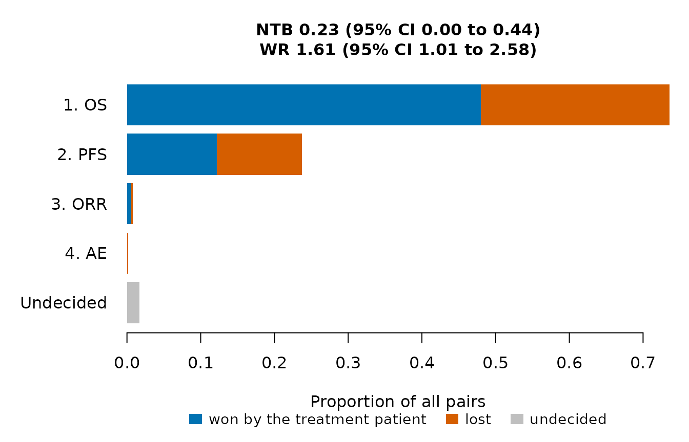

OncoCohortSelect helps to choose one of several single-arm cohorts studied in parallel, for example combination regimens in the cohorts of a phase 2 trial, with several efficacy and safety endpoints. The cohorts are compared by two approaches:
- a posterior benefit-risk score (Chakraborty et al., 2026), computed for each cohort against target values or for a cohort relative to a reference cohort, and
- generalized pairwise comparisons of prioritized endpoints (Buyse, 2010), which give the net treatment benefit, the win ratio and the win odds of a cohort against a reference cohort.
The same functions analyze the data of a completed trial and of simulated trials, so that a decision rule can be evaluated by simulation before the trial and applied to its data afterwards.
A first example
SimCohorts() simulates cohorts with correlated
progression-free survival (PFS), overall survival (OS) and objective
response, generated by the CorOncoEndpoints package, and an adverse
event. Here one trial with two cohorts of 50 patients is analyzed at
month 24.
arms <- list(
Cohort1 = CorOncoEndpoints::OncoArm(pfs.median = 6, orr = 0.30, resp.cor = 0.4,
death.prop = 0.15, os.median = 15),
Cohort2 = CorOncoEndpoints::OncoArm(pfs.median = 8, orr = 0.45, resp.cor = 0.4,
death.prop = 0.15, os.median = 18))
d <- SimCohorts(nsim = 1, n = c(50, 50), arms = arms, ae.rate = c(0.20, 0.35),
cutoff = 24, a.time = c(0, 12), seed = 1)
head(d)
#> sim group accrual_time pfs_tte pfs_event os_tte os_event response ae
#> 1 1 Cohort1 3.436951 18.123673 1 20.563049 0 0 0
#> 2 1 Cohort1 11.376369 7.577337 1 12.623631 0 0 0
#> 3 1 Cohort1 9.781919 1.107114 1 3.203035 1 0 0
#> 4 1 Cohort1 8.375189 4.197125 1 4.197125 1 0 0
#> 5 1 Cohort1 10.245421 2.699816 1 10.090377 1 0 0
#> 6 1 Cohort1 10.204578 7.689206 1 13.795422 0 1 1Endpoints are defined by the columns that hold them and by their favorable direction; any number of binary and time-to-event endpoints can be used.
eps <- list(
Endpoint("OS", "tte", time = "os_tte", event = "os_event"),
Endpoint("PFS", "tte", time = "pfs_tte", event = "pfs_event"),
Endpoint("ORR", "binary", var = "response"),
Endpoint("AE", "binary", var = "ae", higher.better = FALSE))The benefit-risk score of each cohort against target values combines the posterior probabilities that the response rate is at least 0.3, that the PFS and OS probabilities at months 6 and 12 are at least 0.5 and 0.6, and that the adverse event rate is at most 0.3.
crit <- data.frame(endpoint = c("ORR", "PFS", "OS", "AE"),
target = c(0.30, 0.50, 0.60, 0.30), time = c(NA, 6, 12, NA))
BenefitRisk(d, eps, crit)
#> Posterior benefit-risk scores against target values
#>
#> component definition weight cutoff
#> ORR P(rate >= 0.3) 0.25
#> PFS_S6 P(S(6) >= 0.5) 0.25
#> OS_S12 P(S(12) >= 0.6) 0.25
#> AE P(rate <= 0.3) 0.25
#>
#> group ORR PFS_S6 OS_S12 AE admissible BR selected
#> Cohort1 0.89 0.216 0.184 0.999 TRUE 0.434 FALSE
#> Cohort2 1.00 0.952 0.907 0.943 TRUE 0.950 TRUE
#>
#> Selected: Cohort2The pairwise comparisons of Cohort2 against Cohort1 use the priority order OS, PFS, response and adverse event.
w <- WinStat(d, eps, treatment = "Cohort2", control = "Cohort1")
w
#> Generalized pairwise comparisons: Cohort2 (treatment) vs Cohort1 (control)
#> Patients: 50 and 50 (2500 pairs); scoring rule of Gehan
#>
#> Proportions of all pairs won, lost and still undecided by priority level:
#> priority endpoint threshold win loss undecided
#> 1 OS 0 0.4800 0.2556 0.2644
#> 2 PFS 0 0.1216 0.1160 0.0268
#> 3 ORR 0 0.0048 0.0032 0.0188
#> 4 AE 0 0.0000 0.0016 0.0172
#>
#> Pairs won 0.606, lost 0.376, tied 0.0172
#>
#> 95% confidence intervals:
#> statistic estimate se lower upper
#> NTB 0.23 0.112 0.00225 0.435
#> WR 1.61 0.388 1.00522 2.582
#> WO 1.60 0.378 1.00452 2.540The net treatment benefit of Cohort2 is 0.23 and its win ratio 1.61.
The results of BenefitRisk(), WinStat(),
SimSelection() and SelectionOC() have
print() and plot() methods; the plot of the
win statistics shows how many pairs each endpoint decides.
plot(w)
Where to go next
- Posterior benefit-risk score: the models, the components against target values and relative to a reference cohort, weights and admissibility.
- Net benefit and win ratio: priority, thresholds, the scoring rules of Gehan and of Péron, and the confidence intervals.
- Evaluating decision rules by simulation: selecting one of three cohorts and comparing rules at a common probability of a false selection.
- Analyzing a completed trial: data in the style of ADaM data sets and the decision at the end of the trial.
References
Buyse, M. (2010). Generalized pairwise comparisons of prioritized outcomes in the two-sample problem. Statistics in Medicine, 29, 3245-3257. https://doi.org/10.1002/sim.3923
Chakraborty, S., Dubey, A. K., Kumar, A. and Chan, I. (2026). A two-stage dose optimization framework for oncology drug development with multiple efficacy and safety endpoints via an integrated benefit-risk assessment. Statistics in Biopharmaceutical Research, published online. https://doi.org/10.1080/19466315.2026.2668381